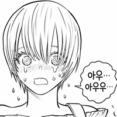

@つついあやめのおっと 아니 병신아 내 글을 이해조차 못하네 이런 빡통들이 문제라니까 ㅋ 너 같은 빡통들한테는 재밌는데 나 같은 고지능자들에게는 노잼이라고 ㅋㅋ 근데 문제는 빡통이 90%라니까? 응? ㅋㅋ 그래서 어쩔 수 없어 ㅋ 그냥 우리 같은 사람들은 계속 불평 불만하면서 숨은 명작들 찾아서 읽는 거고 니들 같은 빡통들은 저런 작품 읽으면 됨 ㅇㅇ
@ㅇㅇ(1.226) 문피아 같은 특정 플랫폼의 1위 순위는 순수한 독자의 작품 감상 결과일 수도 있지만, 동시에 플랫폼 고유의 랭킹 산정 알고리즘의 허점, 작업장이나 바이럴을 통한 조회수·구매수 부양, 혹은 특정 목적을 띤 인위적 매집(사재기) <- 이런건가? 생각하는 게 맞지. 뭔 문학 이론을 가져와서 얘기 하고 있음?
↳ 답글 · ㅇㅇ · 11.14 12:41:31
@つついあやめのおっと 뭔 소리야? ㅋㅋ 얘 좀 이상해 ㅋㅋ 저거 순위는 그냥 무조건 조회수임 ㅋㅋ 난 그리고 문학 이론에 대해 말한 적이 단 한번도 없는데? ㅋㅋ 너 이상해 ㅋㅋ
↳ 답글 · つついあやめのおっと · 11.14 12:42:42
@ㅇㅇ(1.226) 빡통이 90프로건 뭐건 저게 정당한 집계가 맞고 그래서 사람들이 실제로 많이 읽는 거면 니가 마음에 안 들면 딴 걸 읽으면 되지 그게 문학 이론이랑 관련이 있음? 애초에 문학이론 자체가 빡통이 90프로건 어떻게 사람들의 주의를 환기하고 재미를 느끼게 할 거냐 하는 방법론인데 빡통이 90프로라고 거기서 변하는 게 있냐?
↳ 답글 · つついあやめのおっと · 11.14 12:43:46
@ㅇㅇ(1.226) 세계관, 개연성, 핍진성 자체가 문학 이론에서 나온 말임. 사람들의 주의를 어떻게 환기 시키고 어떻게 재미를 느끼게 할 것이냐 하는 거에서 나온 말임.
↳ 답글 · つついあやめのおっと · 11.14 12:57:43
@ㅇㅇ(1.226) 플랫폼 내부의 개인 리뷰와 커뮤니티 박제(공개 재판)의 층위를 구분하지 못한 채, 대중의 자발적 선택마저 자기 기준에 맞지 않는다고 '저능아 취급'하며 심판하려는 그 교조적 태도가 본질적인 문제 <- 제미나이도 이렇게 잘 알아듣는다. 임마.
↳ 답글 · つついあやめのおっと · 11.14 13:01:41
@ㅇㅇ(1.226) 저 리뷰 자체에 문제가 있는 게 아니라 이렇게 심판대에 세우는 이 원글도 문제가 있지만 거기에 대해 문학 이론으로 심판을 하는 너도 문제가 있다는 거임. 내 요지는. 지금 이 원 댓글러든. 원댓의 너의 댓이든. 원글이든.
어정쩡한 소설 커버치는 애들 논리가 맨날 이거임.
그런데 애초에 그런식으로 현설 ㅈ까리 이러고 현실과 정말 동떨어진 설정 오락가락하면 그게 늦어도 5화 안에 보이고 거기서 이미 대부분이 걸러짐.
그걸 다 극복하고 도파민을 꾸준히 줄 수 있는 소설은 정말 한 줌 속에서도 한 줌도 없음.
↳ 답글 · ㅇㅇ · 11.14 17:18:13
@ㅇㅇ(211.37) 한줌 중에 한줌이라는말도 맞는데 굳이 웹소설 아니어도 만화판만봐도 그럼 반대로 지킬거 다 지킨만화도 찾아보면 한줌임 당장 예시들어도 도파민 만화로 톱, 주술, 최애아이 같은것도 있고 반대로 탄탄한 서사같은건 강연금 진격거 같은게 있겠지 뭘 추구하는지는 작가마다 다르겠지만 내가 인정하기 싫어도 잘나가는 놈은 잘나감
↳ 답글 · ㅇㅇ · 11.14 17:21:40
@ㅇㅇ(211.37) 그리고 원피스도 난 정상결전이나 니카5 별로 안좋아하는데 도파민이 개맛도리면 그냥 그게 ㅇㅈ받음 원피스 인체사이즈 즈니샤 칼크기 등 ㅈ같은 요소 많아도 그냥 대충 기세로 밀어붙이면 팬이 알아서 수긍함 만화말고도 웹소도 그렇고 핍진성 개연성 중요하긴한데 진짜 중요한가 잘모르겠음
ㅇㅇ · 11.14 11:46:53
개병신설정으로 자캐딸해도 재밌으면 됨 재미없어서 화난거임
ㅇㅇ · 11.14 11:54:45
제목만 봐도 그런거 기대하면 안될거 같은데 저러고 있는거 자체가 잘못아님? 그 뭐냐 씹덕영상에 댓글로 씹덕욕하니까 씹덕프사가 최소한 이런 영상에서 할 댓글은 아니냐하는거랑 뭐가 다름? 제목 좀 보셈 ㅋㅋ
↳ 답글 · ㅇㅇ · 11.14 12:00:09
↳ 답글 · ㅇㅇ · 11.14 12:31:35
이것도 ㅈㄴ 안타까운 게 ㅋㅋㅋㅋㅋㅋㅋㅋㅋㅋㅋㅋ 그냥 요즘 웹소설 제목이 전부 다 저럼 ㅋ 그래서 저런 제목에도 간혹 명작 소설이 섞여 있어서 보긴 해야 됨 ㅋㅋㅋㅋㅋㅋㅋㅋㅋㅋㅋㅋ
↳ 답글 · ㅇㅇ · 11.14 13:04:30
↳ 답글 · ㅇㅇ · 11.14 15:32:57
애초에 저런 제목 아니라면 아무리 대작소설도 순위권 안에 들지를 못해서
예전시대 이영도나 전민희급 되는 진짜 작가들도 제목 다 저렇게 붙여서 연재함
물론 저 소설이 그렇단건 아니고
ㅇㅇ · 11.14 12:00:31
↳ 답글 · 숨쉬는청년 · 11.14 13:50:11
ㅇㅇ · 11.14 12:07:06
그래도 읽긴 한거보니까 재밌긴 한가보네
ㅇㅇ · 11.14 12:08:44
대놓고 장르에 현대판타지 적혀있는데 뭐 어쩌란겨
ㅇㅇ · 11.14 12:12:37
졸라 사이다라서 재밌더라
뇌빼고 보기에 딱좋음
ㅇㅇ · 11.14 12:15:43
38살에 대통령이 왜? 늙어빠진 새끼들이 하는 것보다 나은 것 같은데 - dc App
↳ 답글 · ㅇㅇ · 11.14 13:28:32
헌법에서 40세부터 가능한걸로 규정했으니까
↳ 답글 · ㅇㅇ · 11.14 15:59:50
이런 병신이 수두룩하구나
↳ 답글 · ㅇㅇ · 11.14 16:03:39
미친새끼야 ㅋㅋㅋㅋㅋㅋㅋㅋㅋㅋㅋㅋㅋㅋㅋ
ㅇㅇ · 11.14 12:15:59
좌파 망상 소설같네
ㅇㅇ · 11.14 12:19:05
문피아는 현실성 따짐
노벨피아에 올렸으면 역대급 천재작가라고 빨아줌
↳ 답글 · ㅇㅇ · 11.14 18:27:03
ㅋㅋ 유료결제만 들어가도 싹 다 사라진다
ㅇㅇ · 11.14 12:20:30
판타지소설이라도 개연성이 필요하고, 현대판타지라면 몰입할 수 있도록 최소한의 그럴듯한 설정을 갖추어야 함. 소설의 사실성이라고 하고, 그래야지만 생동력과 설득력으로 몰입할 수 있는거임.
뇌빼고 읽는것도 뭔가 걸리는게 없어야 읽을 생각이라도 들지 않나...상식에 반하면서 재밌는건 엽기라고 부를수있지만, 그게 또 그냥 저능아라 상식이 결여된거랑은 다른거지
ㅇㅇ · 11.14 14:49:05
어휴 문피아를 모르는구나
↳ 답글 · ㅇㅇ · 11.14 14:49:18
문피아 쉼대남 영써티 영포티들은
↳ 답글 · ㅇㅇ · 11.14 14:49:28
자기보다 나이 ㅈㄴ많으면 소설 안 본다
↳ 답글 · ㅇㅇ · 11.14 14:49:50
자기가 고등학생일 땐 이고깽 보던 분들이고
↳ 답글 · ㅇㅇ · 11.14 14:50:10
이젠 늙어서는 영써티 인생역전물 보는 건데
↳ 답글 · ㅇㅇ · 11.14 14:50:24
당연히 대통령 나이는 38세 해야지 55세인 순간 ㅈ됨 ㄷㄷ
↳ 답글 · ㅇㅇ · 11.14 14:50:37
울두르추 · 11.14 15:00:27
늙은이들 요새 편의점진상대신 웹소1화에서 깽판치는거 유명하잖아
ㅇㅇ · 11.14 15:10:54
대체역사입니다만?
삭제됨 · 11.14 15:17:25
삭제된 댓글입니다.
↳ 답글 · ㅇㅇ · 11.14 15:18:34
2.1배TQQQ · 11.14 15:24:43
내란 혐의의 불법 계엄 대통령 탄핵하라고 했더니
윤석열 탄핵소추안_탄핵소추사유:
더불어민주당 "윤대통령, 북한과 중국, 러시아를 적대시하고, 일본 중심의 기이한 외교정책"
↳ 답글 · 2.1배TQQQ · 11.14 15:24:53
이재명 대통령선거 후보, 상고심에서 유죄 취지 파기환송 이후
김혜경, '공직선거법 위반' 2심 벌금 150만원 선고에 상고
'허위사실 공표' 선거법 개정안 ( '당선목적'만 허위사실 공표죄 없애기 ) 민주 주도로 행안위 통과
李 선거법·대장동 '죄없음' 되나…與내부, '재판중지법' 촉구
무죄·면소 판결은 가능토록 했기에 공직선거법 개정과 배임죄 폐지
가 이뤄질 경우, 일부 혐의는 대통령 임기 중 공소가 취소되는 ‘면소
↳ 답글 · 2.1배TQQQ · 11.14 15:25:20
“대법 판결 헌재에서 다퉈보자”…민주, ‘4심제’ 개정안 발의
____/ “대통령 되면 형사재판 중지” 형소법 개정안, 민주당 주도 법사위 소위 통과
___, 대통령 후보 등록 시점부터 형사재판 중지
장경태, 법원조직법 개정안 발의 "대법관 14명 -> 100명"
____/ 민주당 "이재명, 당선돼도 무죄 선고할 재판은 계속해도 된다"
____/ 민주당 정책 민주연구원 부원장 “삼권분립 막 내려야… 사법부 없앨지도 고민할 시기”
____ 정청래 “이재명정부 탄생하면 법원 각오하라”, "대법관 100명도 부족" _2024.05.27. 기사
↳ 답글 · 2.1배TQQQ · 11.14 15:27:54
이 대통령실 "법원, 李 재판중단 입장 이미 밝혀…뒤집으면 다른 조치 필요"
2025.11.07.
강훈식 비서실장 국회 예결위 출석 답변
'李에 법적 예외 없느냐'는 질문에 "그렇다"
윤석열 정권 검찰청, 국가정보원, 감사원 등의 조작수사·조작기소 등 의혹의 진상규명을 위한 특별검사 임명 등에 관한 법률안
특검에게 이재명 대통령과 관련된 사건을 공소취소할 수 있는 권한을 부여
공소취소권은 공소를 제기한 당해 검사의 고유 권한인데, 특검이 공소취소권을 갖게 되는 것은 형사소송법의 원칙과도 맞지 않으며, 특정인을 위해 공소취소권을 부여하는 행위는 입법 평등권 나아가 사법권의 독립성까지 침해할 수 있다는 우려
특검법안 - 대통령 특별검사 임명권
"'누구도 자기 사건의 재판관이 될 수 없다'는 법치주의
↳ 답글 · 2.1배TQQQ · 11.14 15:28:01
↳ 답글 · 2.1배TQQQ · 11.14 15:29:22
↳ 답글 · ㅇㅇ · 11.14 15:42:58
민주당의 탄핵소추사유 : 북중러를 적대시하고 친일해서
ㅋㅋㅋㅋㅋㅋㅋㅋㅋㅋㅋㅋㅋㅋㅋㅋㅋㅋㅋㅋㅋㅋㅋㅋㅋㅋㅋㅋㅋㅋㅋㅋㅋㅋㅋㅋㅋㅋ
ㅇㅇ · 11.14 15:43:45
그 때에 승가타 법문을 연설하였는데,
이 법을 들으면 아뇩다라삼먁삼보리에 이르게 되어 모든 죄를 멸하고 번뇌를 쉬게 된다.
너는 이제 자세히 듣거라.
너를 위해 설하여 네가 듣고 나서 속히 해탈을 얻게 하리라.
[4구게를 듣고 중간을 빠뜨리지만 않아도 모든 악을 다 없애고 수다원의 과를 얻는다.
그런 뒤에 보시를 하여 모든 고통을 멀리 여의고,
고통받는 중생들에게 해탈을 얻게 하고,
공포에 떠는 중생에게 공포를 멀리 여의게 한다.]~!
ㅇㅇ · 11.14 15:46:34
지금 찢이고 나발이고를 떠나서 저건 맞말이잖아?
↳ 답글 · 2.1배TQQQ · 11.14 16:05:20
개헌 논쟁 격화: 김민석 대표, 대통령 중임제 가능성에 응수하다
2026.09.09
더불어민주당의 김민석 대표는 최근 국민의힘 정점식 원내대표가 제기한 개헌 불가론에 대해 반박하며, 개헌 논의의 걸림돌은 없다는 입장을 내비쳤다
정 원내대표는 연설에서 대통령 중임제 개헌을 언급하며, 현 정부 하에서 연임과 관련한 의혹을 제기했다. 이에 대해 김 대표는 이재명 대통령이 연임을 포기하고 임기 후 본인의 재판을 수용하겠다고 선언한다면, 개헌 논의가 가능하다고 판단한 것으로 보인다.
김 대표는 "현행 헌법과 절차를 지키면서 변화하는 시대에 맞는 개헌을 추진하겠다"고 밝혔으며, 권력구조 개편은 국민의 요구에 부응해야 한다고 강조했다. 그는 또한 정 원내대표의 조건들이 개헌의 걸림돌이 될 수 없다고 덧붙였다.
냉동 · 11.14 15:47:59
마지막이 좀 짜치네 마지막에 외계인이 쳐들어오는 거였으면 원문이 좀 궁금했을뻔
ㅇㅇ · 11.14 16:07:50
할꺼면 러시아 양판소 포파딴치 처럼하든가 ㅋㅋㅋ 조니와 대구경의 마법이었나?
ㅇㅇ · 11.14 17:32:59
제목보고도 쳐 들어가서 읽는게 문제 아니노?
↳ 답글 · ㅇㅇㄴㄴ · 11.14 17:43:18
ㅇㅇ · 11.14 18:10:01
얼마나 재밌길래 이런 정성 댓글을 달아주는거냐
ㅇㅇ · 11.14 18:14:34
딱봐ㅏ도 1찍좌빨 수준 ㅋㅋㅋ
↳ 답글 · ㅇㅇ · 11.13 21:45:40
어느정도 병신같으면 그냥 뜌따따하면서 보겠지만
그 수준을 넘어서는순간 좆같아지는거임
↳ 답글 · 찡드 · 11.13 21:46:09
저기는 걍 대놓고 나 280도 정도는 돌아있는 설정이요 느낌아닌가...
↳ 답글 · ㅇㅇ · 11.13 21:46:26
아예 현대배경 판타지도 아니고 정치물같은데 그럼 대역처럼 독자층의 최소한의 핍진성 기대치가 있는거지
↳ 답글 · ㅇㅇ · 11.13 22:03:09
핍진성, 개연성 안 지킬거면 그건 잘못 쓴 글이니까 욕 먹을만 하지않나? 소설이라고 해도 정도가 있잖아
↳ 답글 · ㅇㅇ · 11.13 22:16:57
정알못인데 첫줄만 봐도 왜 개지랄했는지 이해가 가긴함
국회가 대통령을 지지해서 연임제한을 해제ㅋㅋ
↳ 답글 · CFOP · 11.13 22:27:10
정치물에서 저런 거 안따질 수가 있나 ts라도 달려있음 모를까
↳ 답글 · 싫어 · 11.13 22:35:39
정치물에서 저런거 안따질수가 없음 진짜 개좆같음
뜌따이물에선 그래도 되는데 대역,정치물이 저러면 쌍욕나옴
저게 어쩔 수 없는게 빡통 작가새끼들도 당연히 있겠다만 ㅋㅋㅋㅋㅋㅋㅋㅋ 문제는 독자 수준 자체가 저능한 새끼들이 99%라 그 저능아 독자들이 빡통 작가 작품들만 ㅈㄴ 봄 ㅋㅋㅋ 그럼 제대로 된 소설 쓰던 새끼들은 그냥 묻히는 거임 ㅋㅋ 그래서 제대로 된 작가새끼들도 저능아 취향에 맞춰서 빡통 작품을 쓰기시작하고 ㅋㅋ 그냥 전~~~~부 빡통화 되감 ㅋㅋㅋㅋㅋㅋㅋㅋㅋㅋㅋㅋㅋㅋㅋㅋㅋㅋㅋㅋㅋㅋ
↳ 답글 · ㅇㅇ · 11.14 11:18:52
눈을 떳꾸나 ㅋㅋㅋㅋㅋㅋ
↳ 답글 · ㅇㅇ · 11.14 11:20:29
심지어 더 무서운 사실은 매우 놀랍게도 이게 독자들 수준이 대체로 과거보다 높아진 거임 ㅋㅋㅋㅋㅋㅋㅋㅋ
↳ 답글 · ㅇㅇ · 11.14 11:47:18
ㄹㅇ임 좀 복잡한거 쓰면 안봐범 ㅋㅋ 작가들이 질수 늘수록 힘들어하는게 몇질 글쓰면서 자기 수준이 높아져버렸는데 계속 초짜시절 수준으로 다운그레이드 시켜야 겨우먹혀서. 잘나가던 작가가 갑자기 글 접거나 5트 6트 박는게 그래서임
↳ 답글 · ㅇㅇ · 11.14 11:55:37
↳ 답글 · orthodox · 11.14 12:41:17
(좆같은 웹판)
↳ 답글 · ㅇㅇ · 11.14 12:43:43
그와중에 글 잘 쓰는 사람은 요즘 웹소설판으로 간다, 종이책 쓰는 놈들은 글 못쓰는 놈들이라고 정신승리함 ㅋㅋㅋㅋㅋㅋㅋ
이건 장르가 잘못했네
현대판타지가 아니라 이세계였으면 시비 안 걸렸을 거잖아
공왕제인데 원로원이 댕쩌는 현 공왕을 엄청 지지해서 연임제한을 해제하려는 거고
전세계를 상대로 열심히 동맹작업 안 하면 주변국에 먹혀버릴 소국연합 공왕따리라
제국 황실에서는 의전도 제대로 못 받으며 굽신굽신 하는 거고
↳ 답글 · ㅇㅇ · 11.14 11:26:56
근데 솔까 그런 판타지도 그짝 새끼들을 너무 저지능으로 만들면 욕 먹긴 함 ㅋㅋㅋㅋㅋㅋㅋ 웃긴 게 저지능판타지물 작가들도 꽤 돈을 번 새끼들이 있지만 ㅋㅋㅋㅋㅋㅋㅋㅋㅋ
↳ 답글 · ㅇㅇ · 11.14 11:49:32
요즘 이세계물 아예 안봐서 이세계물 쓰던 작가들도 현판써서 그럼 ㅋ
2456778 · 11.14 11:25:04
↳ 답글 · Wasd · 11.14 11:35:34
↳ 답글 · 숨쉬는청년 · 11.14 13:48:43
ㅇㅇ · 11.14 11:28:27
그거 기억나는 놈있냐 노무현 일본가서 '일본 국민과의 대화'라는 방송 찍은적 있음. 유튜브에도 남아있다
ㅂㅈㄱㅂㅈㄱ · 11.14 11:29:17
대통령은 40살 넘어야 출마 가능하잖아..
ㅇㅇ · 11.14 11:30:54
티비에 나오는것도 아니고 ㅈㄴ 수많은 작품이 올라오는 곳에 가서 지가 골라서 읽어놓고 저지랄 하는건 왜그러는 거임 ㅋㅋㅋ
↳ 답글 · ㅇㅇ · 11.14 15:01:54
내가 골라서 간 식당에서 밥을 먹어도 그 밥에서 죽은 쥐가 나오면 손님이 지랄 염병 하는게 당연하잖아
최소한 식당 간판 달고 밥을 팔면 먹을 수 있는 밥을 팔아야지 먹으면 위험한 이물질을 내 놓으면 어떡하냐 욕 먹어도 싸다
ㅇㅇ · 11.14 11:33:07
독자 수준이 저능한데 작가가 저능한게 뭐가 문제야
↳ 답글 · ㅇㅇ · 11.14 11:38:31
ㄹㅇㅋㅋㅋ 저런 소설이 성공하니까 저런 소설을 쓰지 ㅋㅋㅋㅋㅋㅋㅋㅋㅋㅋㅋㅋㅋ
ㅇㅇ · 11.14 11:34:18
근데 김치국도 민주당이 2/3 먹었으면 헌법 개정이고 뭐고 다 해줘서 영원히 일당 독재했을텐데 뭐가 이상하다는 거노
ㅇㅇ · 11.14 11:36:43
대통령이 미국토크쇼에 출연하는게 어때서 씨발년아 우리 노짱은 일본예능방송도 나갔구만 이 씨발2찍극우일베남새끼가
ㅇㅇ · 11.14 11:37:18
저건 그냥 대놓고 유쾌마운틴인데? 어정쩡하게 현실성 챙긴다면서 설정 박살내는 게 ㅈ같은 거지
ㅇㅇ · 11.14 11:39:11
웹소설에 뭘바라는거야
파치카 · 11.14 11:42:19
↳ 답글 · 숨쉬는청년 · 11.14 13:49:53
ㅇㅇ · 11.14 11:42:26
팩트) 저렇게 막장으로 써서 인기있는것도 재능이다 아무나 못함
ㅇㅇ · 11.14 11:44:11
상업 소설은 결국 매출이 1순위임
세계관이 탄탄하고 개연성 핍진성 챙겨도
플롯 흐름이 노잼이면 설정딸 소리만 듣고
개연성 핍진성 좀 박살나도 독자 흥미끄는 요소가 많으면
그게 그냥 재밌는 소설이 됨
그리고 내가 전혀 이해가 안되고 ㅈ같아도 그게 상위권에 있으면
마치 유튜브 갈라파고스 된 것처럼 그냥 저걸 좋아하는 사람이 많구나 하면됨
개연성이든 핍진성이든 뭐든 무슨 문학 이론도 재미를 전제해야 하는 거지, 하긴 문학 이론 상당수는 공산주의자들이나 뭐 이상한 자기 사상에 심취한 사람 많아서 재미를 전제를 안하고 이상한 헛소리 해놓은 이론이 반이다만 현실적으로 재미가 없는데 이게 대단하다 어쩐다 하는 건 허위임. 모든 문학 이론은 재미가 전제되거나 재미 있다는 게 뭔지여야 하는 거지 그 외에 소리 하는 거 다 문학 외적인 헛논쟁임.
↳ 답글 · つついあやめのおっと · 11.14 12:22:11
역사소설도 보면 고증만 탄탄하면 그게 고고학 서적이지 뭔 역사소설이냐? 재미 없으면 아무것도 아닌 거임. 그런 면에서 한국이나 중국은 문학가가 아닌데 문단 등단이라는 지위 때문에 하는 사람이 많은 거 같음. 이게 한국, 중국 소설의 질적 하락의 원인임. 학교에서부터 문학으로 국뽕 딸 치는 용도로 해체하고 분석만 하니까 전부 그런 논리로만 문학을 하고 그게 진짜 문학인 줄 아니까 발전이 없는 거임.
↳ 답글 · つついあやめのおっと · 11.14 12:27:07
차라리 오사무 테츠카가 말한 만화 이론이 문학의 본질에 가깝지. 좋은 장면이라는 건 다음 장면을 보고 싶게 만드는 장면. 이 것 이상, 이하가 아님. 그 자체로 본질이고 이게 그 자체로 가치 있다는 거임. 인간을 기쁘게 하는 것. 근데 그거 뿐이면 가치가 없다? 헛소리.
↳ 답글 · ㅇㅇ · 11.14 12:27:08
@つついあやめのおっと 문제는 저게 재미도 없다는 거야 병신아 ㅋㅋㅋㅋㅋㅋㅋㅋ 아 물론 대다수 저능아들한테는 재밌는 게 맞음 근데 머리가 좀만 돌아가도 저런 소설 못 읽음 ㄹㅇ ㅋㅋㅋ 그래서 원래 웹소설 중에서도 나름 볼만한 작품 있었는데 점점 사라져 가고 저능아들 용 자위딸 소설로 바뀜
↳ 답글 · ㅇㅇ · 11.14 12:27:46
@つついあやめのおっと 오사무 테츠카 나와서 말하는데 일본 만화도 점점 구려지는 이유랑 비슷함 ㅇㅇ
댓글
수집 당시 댓글 215개
· ㅇㅇ · 11.14 12:36:29
· ㅇㅇ · 11.14 12:37:29
· つついあやめのおっと · 11.14 12:39:50
· ㅇㅇ · 11.14 12:41:31
· つついあやめのおっと · 11.14 12:42:42
· つついあやめのおっと · 11.14 12:43:46
· つついあやめのおっと · 11.14 12:57:43
· つついあやめのおっと · 11.14 13:01:41
· ㅇㅇ · 11.14 13:02:55
· つついあやめのおっと · 11.14 13:07:55
· ㅇㅇ · 11.14 14:58:34
· ㅇㅇ · 11.14 15:15:34
· ㅇㅇ · 11.14 16:37:21
· ㅇㅇ · 11.14 16:40:45
· ㅇㅇ · 11.14 17:18:13
· ㅇㅇ · 11.14 17:21:40
ㅇㅇ · 11.14 11:46:53
ㅇㅇ · 11.14 11:54:45
· ㅇㅇ · 11.14 12:00:09
· ㅇㅇ · 11.14 12:31:35
· ㅇㅇ · 11.14 13:04:30
· ㅇㅇ · 11.14 15:32:57
ㅇㅇ · 11.14 12:00:31
· 숨쉬는청년 · 11.14 13:50:11
ㅇㅇ · 11.14 12:07:06
ㅇㅇ · 11.14 12:08:44
ㅇㅇ · 11.14 12:12:37
ㅇㅇ · 11.14 12:15:43
· ㅇㅇ · 11.14 13:28:32
· ㅇㅇ · 11.14 15:59:50
· ㅇㅇ · 11.14 16:03:39
ㅇㅇ · 11.14 12:15:59
ㅇㅇ · 11.14 12:19:05
· ㅇㅇ · 11.14 18:27:03
ㅇㅇ · 11.14 12:20:30
· ㅇㅇ · 11.14 12:20:58
· ㅇㅇ · 11.14 12:21:09
· ㅇㅇ · 11.14 12:22:55
· ㅇㅇ · 11.14 12:24:37
· ㅇㅇ · 11.14 13:05:06
ㅇㅇ · 11.14 12:22:30
· ㅇㅇ · 11.14 12:25:30
· dd · 11.14 17:53:58
ㅇㅇ · 11.14 12:24:02
· ㅇㅇ · 11.14 12:26:06
· ㅇㅇ · 11.14 12:49:12
· ㅇㅇ · 11.14 17:18:12
대구박응식36 · 11.14 12:25:13
ㅇㅇ · 11.14 12:28:44
ㅇㅇ · 11.14 12:36:35
ㅇㅇ · 11.14 12:36:48
ㅇㅇ · 11.14 12:37:00
ㅇㅇ · 11.14 12:41:12
ㅇㅇ · 11.14 12:41:19
ㅇㅇ · 11.14 12:45:21
ㅇㅇ · 11.14 12:54:14
ㅇㅇ · 11.14 12:55:05
ㅇㅇ · 11.14 12:57:10
ㅇㅇ · 11.14 13:00:19
ㅇㅇ · 11.14 13:04:09
aaa · 11.14 13:17:59
ㅇㅇ · 11.14 13:25:09
고중력 · 11.14 13:32:25
ㅇㅇ · 11.14 13:40:09
· ㅇㅇ · 11.14 14:07:56
XX · 11.14 13:42:10
ㅇㅇ · 11.14 13:43:57
ㅇㅇ · 11.14 13:49:25
· 숨쉬는청년 · 11.14 13:50:31
린잘알 · 11.14 13:59:06
ㅇㅇ · 11.14 14:01:15
ㅇㅇ · 11.14 14:22:39
ㅇㅇ · 11.14 14:44:55
ㅇㅇ · 11.14 14:49:05
· ㅇㅇ · 11.14 14:49:18
· ㅇㅇ · 11.14 14:49:28
· ㅇㅇ · 11.14 14:49:50
· ㅇㅇ · 11.14 14:50:10
· ㅇㅇ · 11.14 14:50:24
· ㅇㅇ · 11.14 14:50:37
울두르추 · 11.14 15:00:27
ㅇㅇ · 11.14 15:10:54
삭제됨 · 11.14 15:17:25
· ㅇㅇ · 11.14 15:18:34
2.1배TQQQ · 11.14 15:24:43
· 2.1배TQQQ · 11.14 15:24:53
· 2.1배TQQQ · 11.14 15:25:20
· 2.1배TQQQ · 11.14 15:27:54
· 2.1배TQQQ · 11.14 15:28:01
· 2.1배TQQQ · 11.14 15:29:22
· ㅇㅇ · 11.14 15:42:58
ㅇㅇ · 11.14 15:43:45
ㅇㅇ · 11.14 15:46:34
· 2.1배TQQQ · 11.14 16:05:20
냉동 · 11.14 15:47:59
ㅇㅇ · 11.14 16:07:50
ㅇㅇ · 11.14 17:32:59
· ㅇㅇㄴㄴ · 11.14 17:43:18
ㅇㅇ · 11.14 18:10:01
ㅇㅇ · 11.14 18:14:34
· ㅇㅇ · 11.13 21:45:40
· 찡드 · 11.13 21:46:09
· ㅇㅇ · 11.13 21:46:26
· ㅇㅇ · 11.13 22:03:09
· ㅇㅇ · 11.13 22:16:57
· CFOP · 11.13 22:27:10
· 싫어 · 11.13 22:35:39
· 우린어디로¿-2 · 11.13 22:42:05
· CFOP · 11.13 22:42:39
· ㅇㅇ · 11.14 11:12:45
· ㅇㅇ · 11.14 11:35:28
· ㅇㅇ · 11.14 11:41:49
· dlaakanj · 11.14 11:49:14
· ㅇㅇ · 11.14 12:07:25
· ㅇㅇ · 11.14 12:07:52

· ㅇㅇ · 11.14 12:16:19
ㅇㅇ2 · 11.13 21:49:09
· 우린어디로¿-2 · 11.13 22:13:32
· ㅇㅇ · 11.13 22:27:19
· CFOP · 11.13 22:27:25
· 매일라디오 · 11.13 22:51:14
· 랭콜로르 · 11.13 23:13:17
· ㅇㅇ · 11.14 11:25:39
ㅇㅇ3 · 11.13 23:04:35
· 백석주돌아와 · 11.14 08:09:35
· 순수비난 · 11.14 11:07:54
· ㅇㅇ · 11.14 11:31:00
· ㅇㅇ · 11.14 11:31:20
ㅇㅇ · 11.14 11:09:44
· ㅇㅇ · 11.14 11:12:10
· ㅇㅇ · 11.14 11:12:33
엔갤러 · 11.14 11:10:08
훠훠훠 저를 부르셨나요?
piyo · 11.14 11:11:02
· 숨쉬는청년 · 11.14 13:50:50
찢 · 11.14 11:12:25
· 찢 · 11.14 11:12:34
· ㅇㅇ · 11.14 11:12:48
· ㅇㅇ · 11.14 11:12:59
· ㅇㅇ · 11.14 11:13:36
· ㅇㅇ · 11.14 11:14:16
· ㅇㅇ · 11.14 11:15:05
· ㅇㅇ · 11.14 11:15:44
· ㅇㅇ · 11.14 11:37:31
· ㅇㅇ · 11.14 11:43:31
ㅇㅇ · 11.14 11:12:29
ㅇㅇ · 11.14 11:14:24
· ㅇㅇ · 11.14 11:43:08
ㅇㅇ · 11.14 11:14:57
· 파치카 · 11.14 11:41:43
· 숨쉬는청년 · 11.14 13:51:10
크리스티아노 · 11.14 11:15:26
· 토라만 · 11.14 11:16:17
· 숨쉬는청년 · 11.14 13:49:33
ㅇㅇ · 11.14 11:16:05
ㅇㅇ · 11.14 11:16:50
· ㅇㅇ · 11.14 11:17:34
· ㅇㅇ · 11.14 12:29:58
· ㅇㅇ · 11.14 12:46:07
· ㅇㅇ · 11.14 13:58:51
ㅇㅇ · 11.14 11:17:34
· ㅇㅇ · 11.14 14:14:12
ㅇㅇ · 11.14 11:17:47
· ㅇㅇ · 11.14 11:18:52
· ㅇㅇ · 11.14 11:20:29
· ㅇㅇ · 11.14 11:47:18
· ㅇㅇ · 11.14 11:55:37
· orthodox · 11.14 12:41:17
· ㅇㅇ · 11.14 12:43:43
· orthodox · 11.14 16:33:20
ㅇㅇ · 11.14 11:23:03
· ㅇㅇ · 11.14 11:26:56
· ㅇㅇ · 11.14 11:49:32
2456778 · 11.14 11:25:04
· Wasd · 11.14 11:35:34
· 숨쉬는청년 · 11.14 13:48:43
ㅇㅇ · 11.14 11:28:27
ㅂㅈㄱㅂㅈㄱ · 11.14 11:29:17
ㅇㅇ · 11.14 11:30:54
· ㅇㅇ · 11.14 15:01:54
ㅇㅇ · 11.14 11:33:07
· ㅇㅇ · 11.14 11:38:31
ㅇㅇ · 11.14 11:34:18
ㅇㅇ · 11.14 11:36:43
ㅇㅇ · 11.14 11:37:18
ㅇㅇ · 11.14 11:39:11
파치카 · 11.14 11:42:19
· 숨쉬는청년 · 11.14 13:49:53
ㅇㅇ · 11.14 11:42:26
ㅇㅇ · 11.14 11:44:11
· ㅇㅇ · 11.14 11:45:38
· ㅇㅇ · 11.14 11:46:24
· 좀보좀보 · 11.14 11:46:38
· ㅇㅇ · 11.14 11:50:18
· つついあやめのおっと · 11.14 12:19:17
· つついあやめのおっと · 11.14 12:22:11
· つついあやめのおっと · 11.14 12:27:07
· ㅇㅇ · 11.14 12:27:08
· ㅇㅇ · 11.14 12:27:46
· つついあやめのおっと · 11.14 12:33:35
· つついあやめのおっと · 11.14 12:34:40
방귀벌레 · 11.13 20:23:35
· 방귀벌레 · 11.13 20:27:21
· 모르도 · 11.13 21:01:32
· ㅇㅇ · 11.13 21:32:37
· 다곤 · 11.13 22:13:06
· ㅇㅇ · 11.13 23:21:12
· 방귀벌레 · 11.14 01:01:31
· 방귀벌레 · 11.14 01:01:47
ㅇㅇ · 11.13 20:24:34
· ㅇㅇ · 11.13 20:24:52
· 돌댕이 · 11.13 20:25:18
· 다곤 · 11.13 22:13:50
ㅇㅇ1 · 11.13 21:29:13
ㅇㅇ · 11.13 21:31:18
찡드 · 11.13 21:43:03